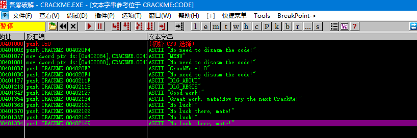
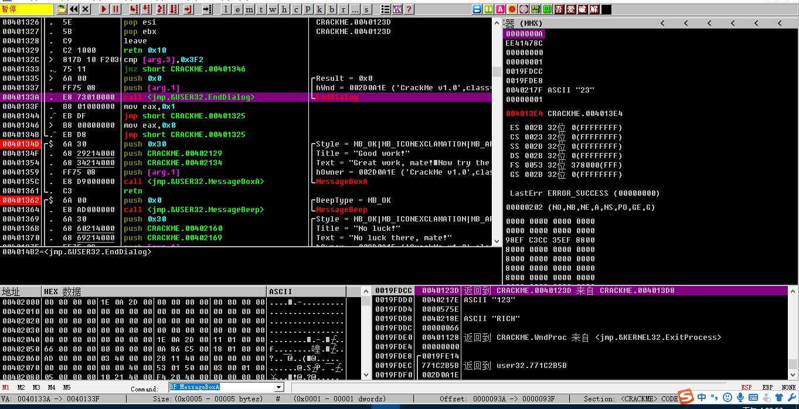
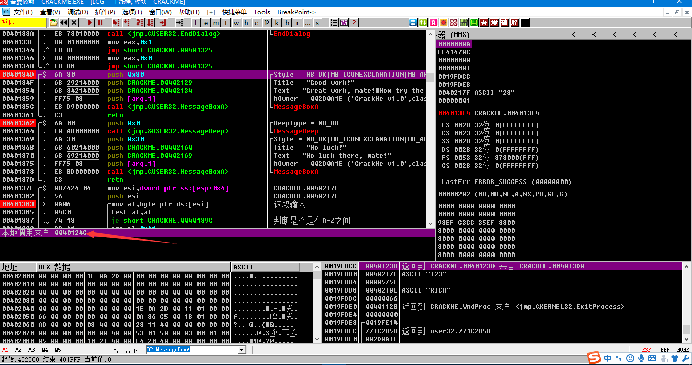
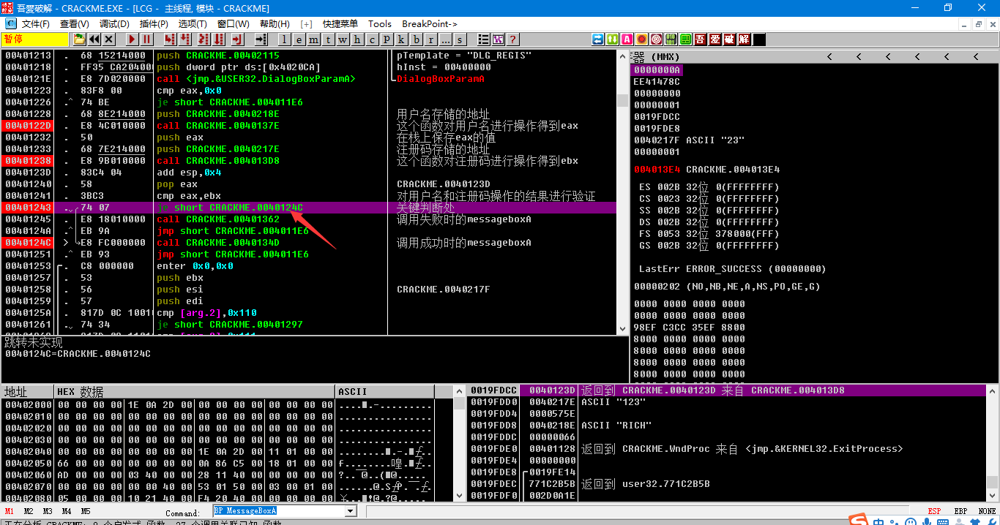
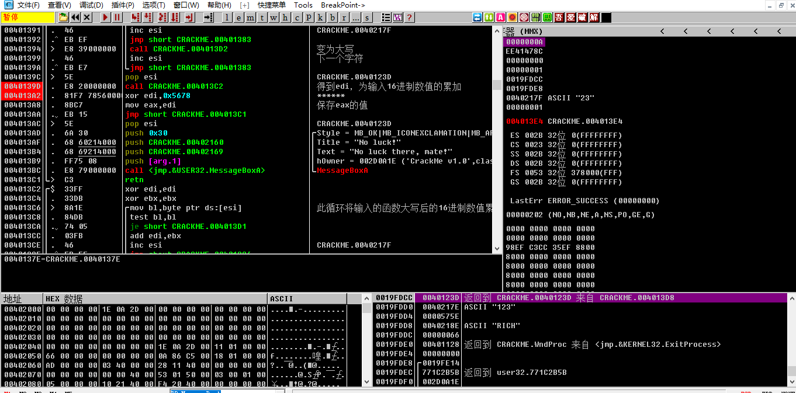
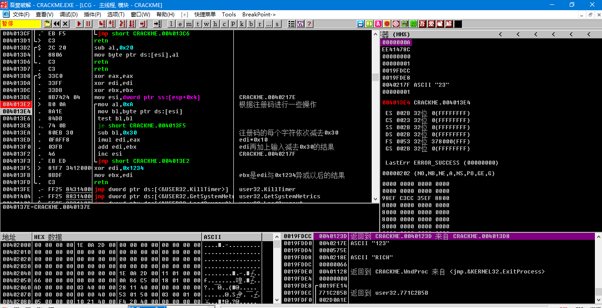

昨天做了一道简答的windows破解，这里写下破解思路，方便以后的复习。
拿到程序发现是一个crackme，程序的目的是要你在不知道用户名和密码的情况下成功进行注册。意思知道了，首先扔
到peid里面查一下壳发现显示“MASM32 / TASM32 [Overlay]”，一开始以为是壳，后来查了一下发现只是使用的编译器
种类。然后把程序扔到od中动态调试。
首先想到的就是根据特殊字符串比如“success”之类的定位到程序的主要逻辑，然后再通过判断关键函数进行分析。


如图，我们定位到了输出注册成功的0040134d这个位置，但是发现附近并没有使用这个函数的关键跳转，仔细看了一下发现
一个messagebox函数的api调用，调用方来自0040124c

于是我们定位到0040124c地址，发现了关键跳

我们发现在进行跳转之前有对eax和ebx的比较，跟踪一下eax和ebx发现它们来自对用户名和注册码进行操作的一系列
函数（操作用户名的是40122d，操作注册码的是401238），f7跟进函数得到算法大致如下:
用户输入用户名和注册码，程序将用户名变为大写，之后进行累加操作，累加完的值于0x5678异或得到值存储在eax中；

然后对注册码进行操作，edi初始值为0，程序进行len(input)次操作，每次先把edi与0xA相乘，然后把edi与输入的注册码
与0x30的差的和重新赋值给edi，用公式表示就是：
for i in range(len(input)):
edi=edi*0xA
edi=edi+input[i]-0x30
这样得到了edi的值后再与0x1234进行异或操作之后把edi赋值给ebx。

后面就是比较eax和ebx然后将判断，跳转。这道题的话没有写出注册算法，只能爆破，23333自己还是太菜，等以后再来填坑。
嗯就是这样，题目挺简单的，只要定位到关键函数关键跳就好解决了,这里总结下定位关键函数以及关键跳的思路(我是萌新dalao勿喷)：
1.通过特殊字符串，比如success，flag等等
2.找到关键的api在api上下断或者跟随。
比如说GetDlagItemTextA函数，这个函数是常见的获取文本框输入的函数，我们可以在这个api上下断，断下来后我们可以
在堆栈段发现push的一些参数，比如说输入存储的位置，然后我们定位到这个输入的存储空间，并在这块空间上下个内存
访问断点，然后哪些指令使用了这块空间存储的值，程序就会断下，那些指令一般就是关键的指令。
3.各种断点，包括上面说到的内存访问，内存写入断点等等
4.函数的调用，比如这道题，关键跳并不在定位到的位置附近，而是程序调用了messageboxa这个函数，然后通过逆向找到
调用方找到关键跳。
目前能想起来的好像也就这么多233333，等想到了再来填坑。